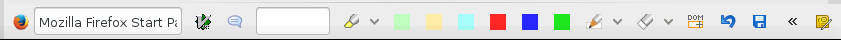

Annotation
You can edit the saved web pages, and annotate with text or drawings. This is the page editor toolbar as follows:

Annotation steps with drawings as follows:
- Install Baow Paint extension.
- Click the right bottom icon
- Click the Baow Paint button

- Draw in the rectangle frame, resize it by drag the top or bottom.
- Click the Save button when done, or click the X button to delete it. The check button means the drawing area will be resized as mouse scrolling.
- Click the save page icon
 finally.
finally.
This is a screenshot image: